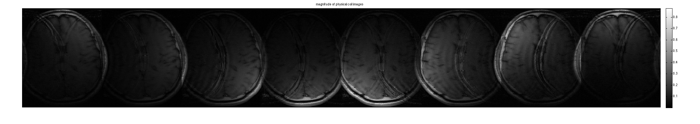
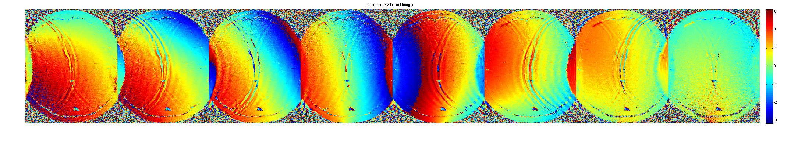
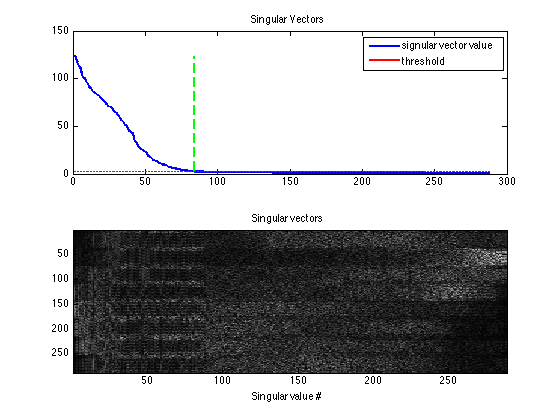
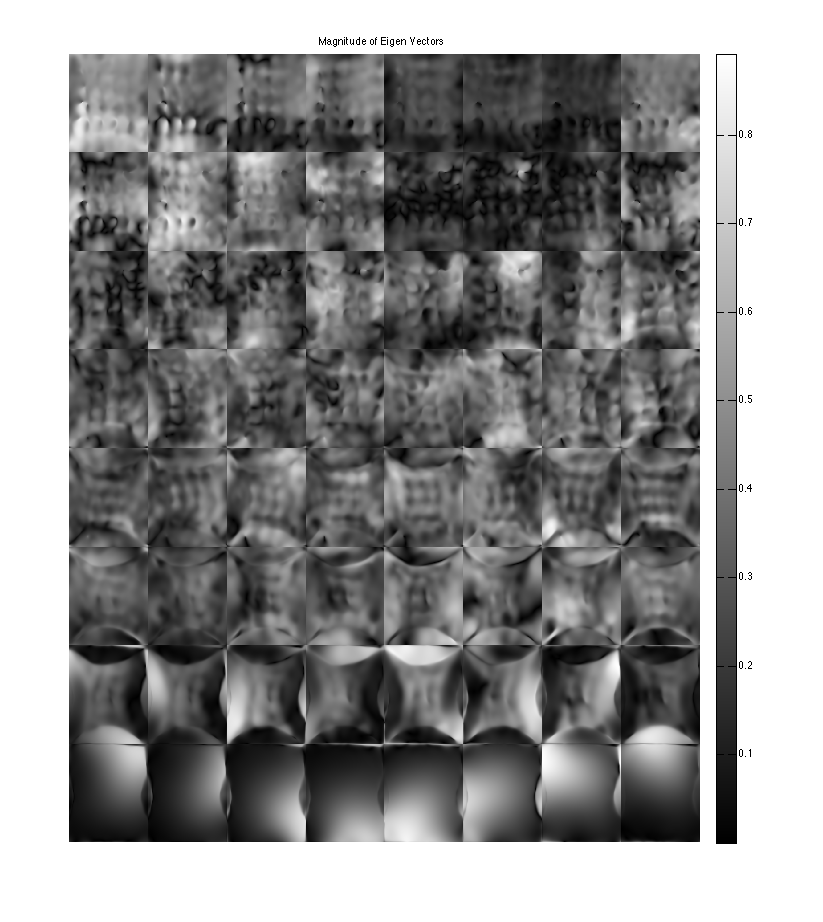
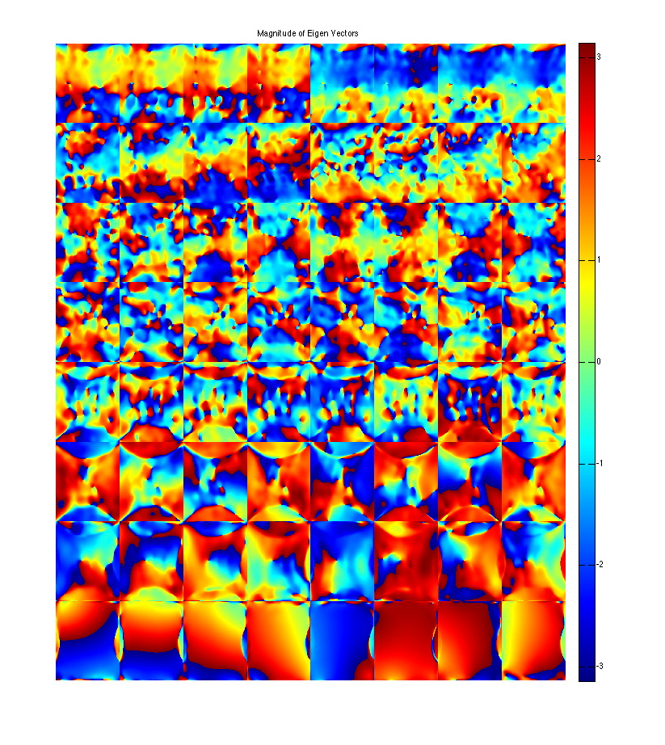
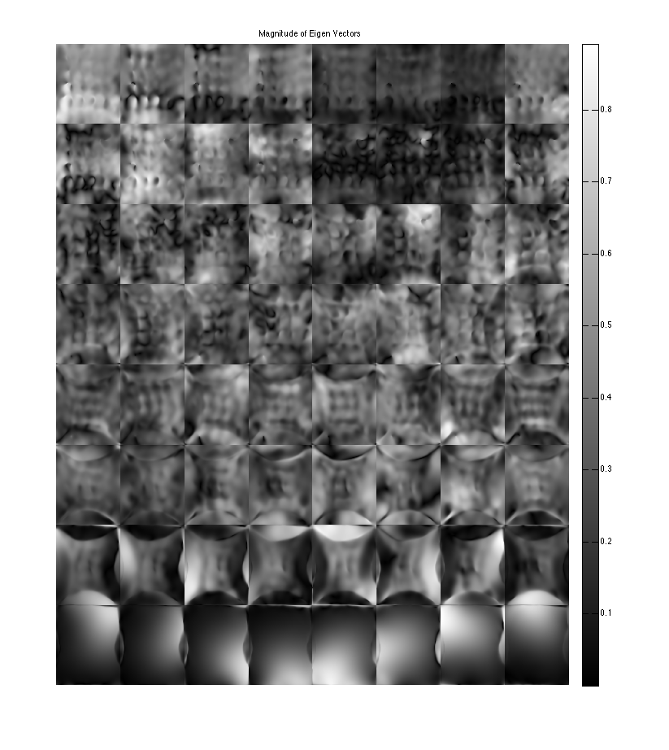
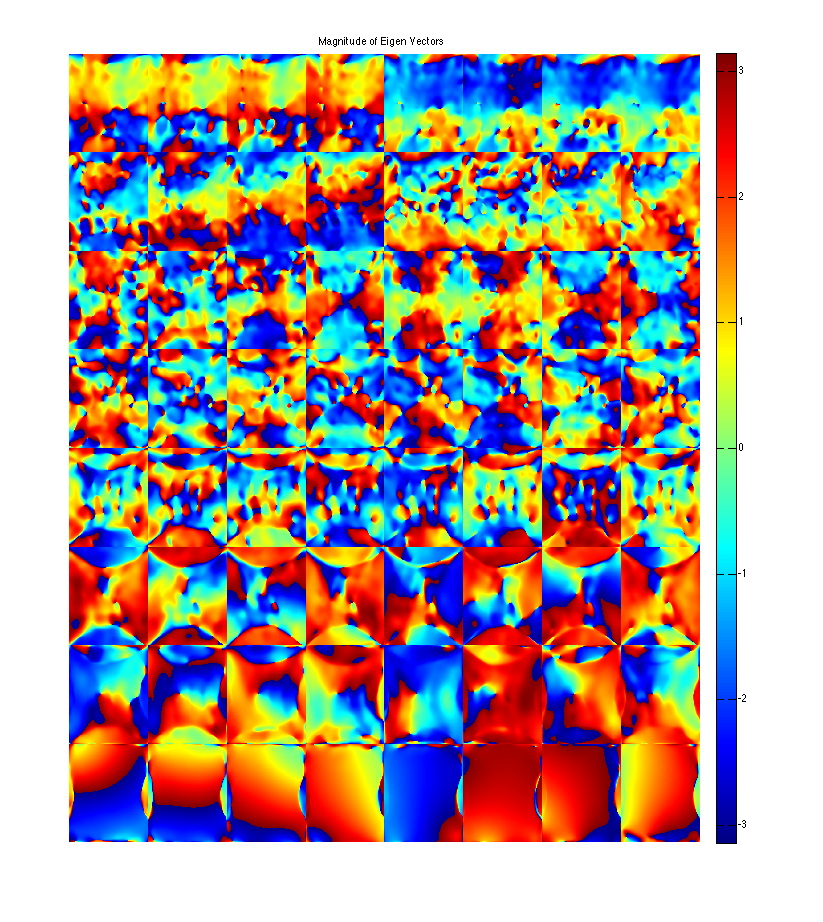
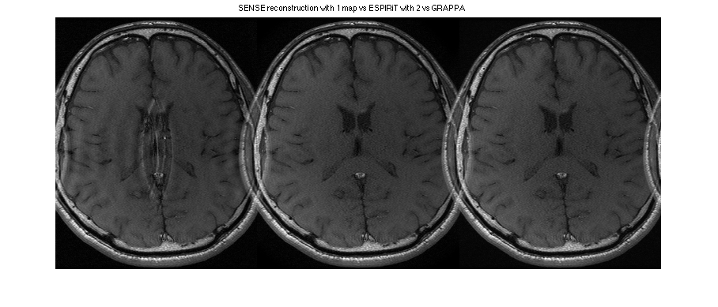
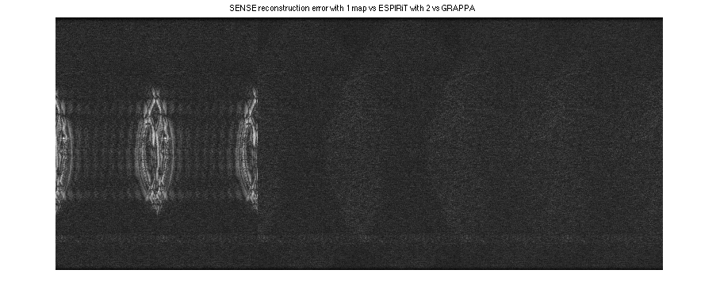

ESPIRiT Reconstruction Demo
This is a demo on how to generate ESPIRiT maps and use them to perform ESPIRiT reconstruction for parallel imaging. It is based on the paper Uecker et. al, MRM 2013 DOI 10.1002/mrm.24751. ESPIRiT is a method that finds the subspace of multi-coil data from a calibration region in k-space using a series of eigen-value decompositions in k-space and image space. Here we also use the "soft" sense idea (Uecker et. al, "ESPIRiT Reconstruction using Soft-SENSE", Proceedings of the ISMRM 2013, pp-127) by using the eigen values to weight the eigen-vectors.
Contents
Prepare DATA
Here we perform ESPIRiT calibration on data which has strong aliasing in the phase-encode direction. SENSE often fails with this type of data.
load brain_alias_8ch DATA = DATA/max(max(max(abs(ifft2c(DATA))))) + eps; %DATA = crop(DATA,[256,256,8]); ncalib = 24; % use 24 calibration lines to compute compression ksize = [6,6]; % ESPIRiT kernel-window-size eigThresh_k = 0.02 % threshold of eigenvectors in k-space eigThresh_im = 0.9; % threshold of eigenvectors in image space [sx,sy,Nc] = size(DATA); % create a sampling mask to simulate x2 undersampling with autocalibration % lines mask = zpad(ones(sx,ncalib),[sx,sy]); mask = repmat(mask,[1,1,8]); mask(:,1:2:end,:) = 1; DATAc = DATA.*mask; calib = crop(DATAc,[sx,ncalib,Nc]);
eigThresh_k =
0.0200
Display coil images:
im = ifft2c(DATAc); figure, imshow3(abs(im),[],[1,Nc]); title('magnitude of physical coil images'); colormap((gray(256))); colorbar; figure, imshow3(angle(im),[],[1,Nc]); title('phase of physical coil images'); colormap('default'); colorbar; 
Compute Eigen-Value Maps
Maps are computed in two steps.
% compute Calibration matrix, perform 1st SVD and convert singular vectors % into k-space kernels [k,S] = dat2Kernel(calib,ksize); idx = max(find(S >= S(1)*eigThresh_k));
Display the singular vectors and values of the calibration matrix
kdisp = reshape(k,[ksize(1)*ksize(2)*Nc,ksize(1)*ksize(2)*Nc]); figure, subplot(211), plot([1:ksize(1)*ksize(2)*Nc],S,'LineWidth',2); hold on, plot([1:ksize(1)*ksize(2)*Nc],S(1)*eigThresh_1,'r-','LineWidth',2); plot([idx,idx],[0,S(1)],'g--','LineWidth',2) legend('signular vector value','threshold') title('Singular Vectors') subplot(212), imagesc(abs(kdisp)), colormap(gray(256)); xlabel('Singular value #'); title('Singular vectors')
crop kernels and compute eigen-value decomposition in image space to get maps
[M,W] = kernelEig(k(:,:,:,1:idx),[sx,sy]);
show eigen-values and eigen-vectors. The last set of eigen-vectors corresponding to eigen-values 1 look like sensitivity maps
figure, imshow3(abs(W),[],[1,Nc]); title('Eigen Values in Image space'); colormap((gray(256))); colorbar; figure, imshow3(abs(M),[],[Nc,Nc]); title('Magnitude of Eigen Vectors'); colormap(gray(256)); colorbar; figure, imshow3(angle(M),[],[Nc,Nc]); title('Magnitude of Eigen Vectors'); colormap(jet(256)); colorbar;
Warning: Image is too big to fit on screen; displaying at 33% Warning: Image is too big to fit on screen; displaying at 33%
  
  Compute Soft-SENSE ESPIRiT Maps
crop sensitivity maps according to eigenvalues==1. Note that we have to use 2 sets of maps. Here we weight the 2 maps with the eigen-values
maps = M(:,:,:,end-1:end); % Weight the eigenvectors with soft-senses eigen-values weights = W(:,:,end-1:end) ; weights = (weights - eigThresh_im)./(1-eigThresh_im).* (W(:,:,end-1:end) > eigThresh_im); weights = -cos(pi*weights)/2 + 1/2; % create and ESPIRiT operator ESP = ESPIRiT(maps,weights); nIterCG = 12;
Reconsturctions
ESPIRiT CG reconstruction with soft-sense and 2 sets of maps
disp('Performing ESPIRiT reconstruction from 2 maps') tic; [reskESPIRiT, resESPIRiT] = cgESPIRiT(DATAc,ESP, nIterCG, 0.01,DATAc*0); toc % ESPIRiT CG reconstruction with 1 map disp('Performing SENSE reconstruction from 1 set of maps') SNS = ESPIRiT(maps(:,:,:,end)); tic;[reskSENSE, resSENSE] = cgESPIRiT(DATAc, SNS, nIterCG,0.01 ,DATAc*0);toc % GRAPPA reconstruction disp('Performing GRAPPA reconstruction ') tic; reskGRAPPA = GRAPPA(DATAc,calib,[5,5],0.01);toc resGRAPPA = ifft2c(reskGRAPPA);
Performing ESPIRiT reconstruction from 2 maps Elapsed time is 5.465768 seconds. Performing SENSE reconstruction from 1 set of maps Elapsed time is 4.023993 seconds. Performing GRAPPA reconstruction reconstructing coil 1 reconstructing coil 2 reconstructing coil 3 reconstructing coil 4 reconstructing coil 5 reconstructing coil 6 reconstructing coil 7 reconstructing coil 8 Elapsed time is 12.164346 seconds.
Note the typical center FOV aliasing in SENSE. Also, note that ESPIRiT has (very slightly) less error than GRAPPA
figure, imshow(cat(2,abs(resSENSE),sos(resESPIRiT), sos(resGRAPPA)),[]) title('SENSE reconstruction with 1 map vs ESPIRiT with 2 vs GRAPPA') figure, imshow(cat(2,sos(ifft2c(reskSENSE-DATA)),sos(ifft2c(reskESPIRiT-DATA)),sos(ifft2c(reskGRAPPA-DATA))).^(1/2),[]) title('SENSE reconstruction error with 1 map vs ESPIRiT with 2 vs GRAPPA') 